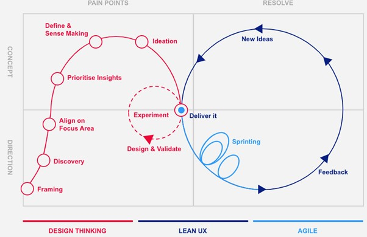

Whilst building the LendIT app we will take the approach of using the leanest most usable features and layer on complexity until we run out of time.
As the project develops we might decide that we want one feature to be lean and another to be complex, when considering this we will consider the of 4 main factors: Scope, Time, Fidelity, and Cost.
Generally, we won’t be able to change one of these factors without impacting another, but we will consider the necessary information and support to make informed decisions.
The timeframe for this project is quite tight we will apply timesaving short cuts where possible – for example leveraging an existing component library over recreating one, skipping some discovery techniques, and leveraging the learnings from your existing products.
We will use Design Thinking, Lean UX and Agile methodologies to guide us through the project - bringing the best practices of Cross Functional teams together.
The diagram, above, highlights the process that we will be following during discovery and build.
